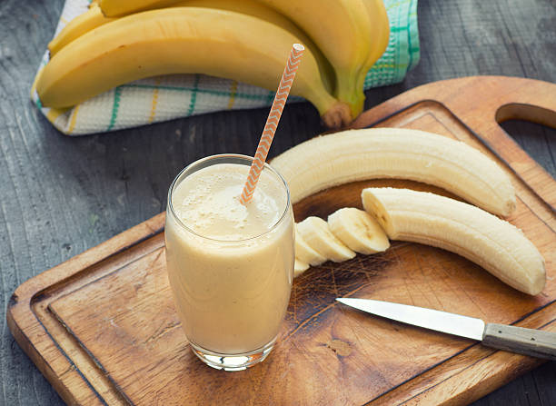

Healthy Banana Smoothie

INGREDIENTS
- ▢1 cup sliced banana, frozen is best, about 1 large banana
- ▢¼ cup Greek yogurt, plain or vanilla
- ▢¼ cup milk, dairy, almond, oat milk, etc.
- ▢¼ teaspoon vanilla extract
INSTRUCTIONS
- Place all ingredients in a blender. Blend until smooth, adding more milk if needed to reach desired consistency.
- Serve immediately.
NOTES:
Frozen banana helps to thicken and chill the smoothie. If your banana is not frozen you can add a few ice cubes to chill the smoothie.
Nutrition information is for smoothie made with plain Greek yogurt and whole milk.
SERVING:
calories: 203kcal
carbohydrates: 39g
protein: 9g
fat: 3g
saturated fat: 1g
cholesterol: 9mg
sodium: 46mg
potassium: 688mg
fiber: 4g
sugar: 23g
vitamin a: 195iu
vitamin c: 13mg
calcium: 124mg
iron: 1mg